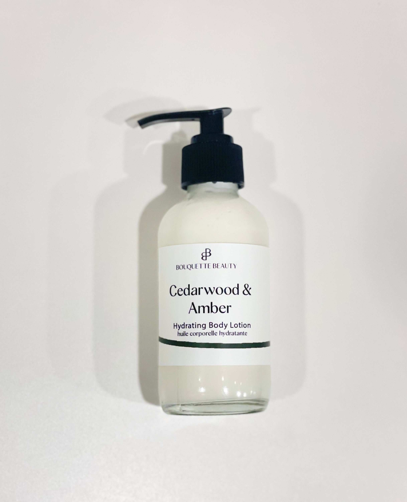
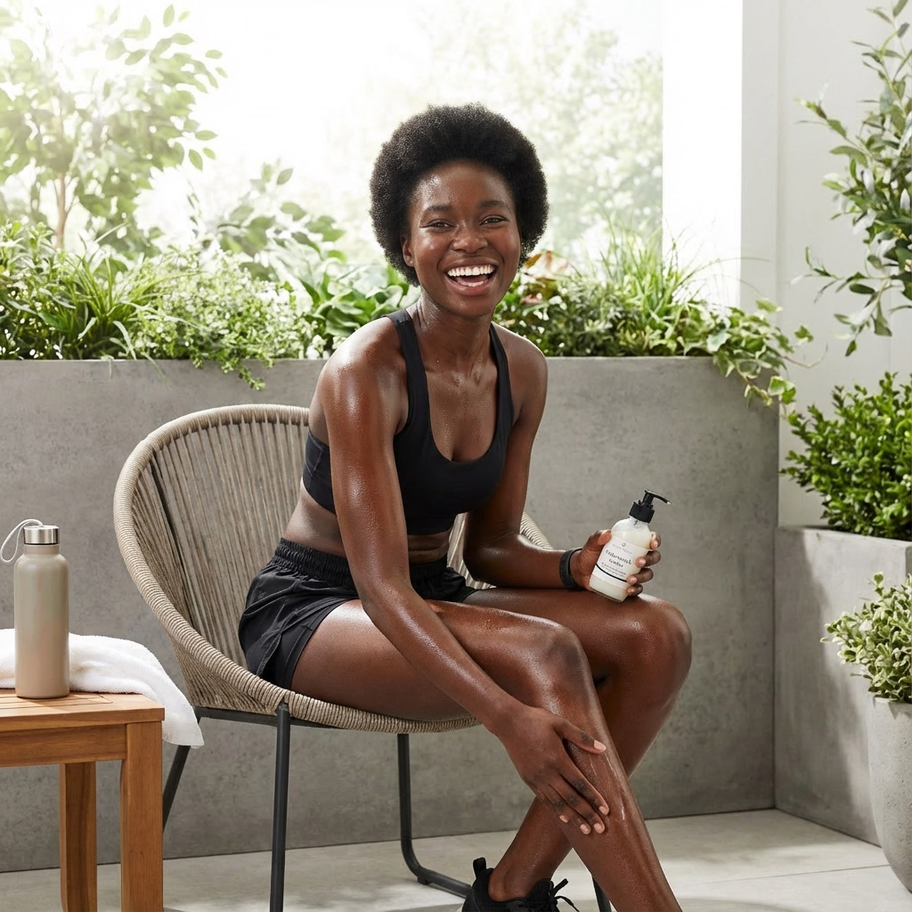

<template id="b05-reveal-template">
  <div data-composition-id="b05-reveal" data-width="1920" data-height="1080">
    <!-- ============================================================
         BEAT 5 — REVEAL · VELLUM scene · before→after wipe + "Proof Before Pitch."
         VO 23.59s · scene 24.3s
         Phase 1 (0.3–6): headline kinetic reveal on vellum bg
         Phase 2 (6–15): cream before→after wipe with clip-path + accent seam
         Phase 3 (15–24): "Proof Before Pitch." slam card center-bottom
         ============================================================ -->
    <div class="beat-fade">
      <div class="bg"></div>

      <!-- decoratives -->
      <div class="glow" data-layout-ignore></div>
      <div class="glyph" data-layout-ignore>✦</div>
      <div class="ghost" data-layout-ignore>dezygn</div>

      <div class="scene-content">
        <!-- Phase 1: Eyebrow + Headline -->
        <div id="b05-eyebrow" class="clip eyebrow" data-start="0.2" data-duration="24.1" data-track-index="2">
          THE UNIQUE MECHANISM
        </div>

        <div class="headline-block">
          <div id="b05-hl1" class="clip headline-line" data-start="0.5" data-duration="23.8" data-track-index="3">
            So I make the image
          </div>
          <div id="b05-hl2" class="clip headline-line accent-line" data-start="1.0" data-duration="23.3" data-track-index="4">
            <em class="serif">first.</em>
          </div>
        </div>

        <!-- Phase 2: Before → After cards -->
        <div class="photo-row">
          <!-- Before card -->
          <div id="b05-before-card" class="clip shot-card before-card" data-start="6.0" data-duration="18.3" data-track-index="5">
            
            <div class="photo-tag tag-before">RAW PHONE SNAP</div>
          </div>

          <!-- Accent seam line that travels left→right during the wipe -->
          <div id="b05-seam" class="clip seam-line" data-start="6.5" data-duration="17.8" data-track-index="6" data-layout-ignore></div>

          <!-- After card with clip-path wipe wrapper -->
          <div id="b05-after-wrap" class="clip after-wrap" data-start="6.5" data-duration="17.8" data-track-index="7">
            <div class="shot-card after-card">
              
              <div class="photo-tag tag-after">CLIENT-READY</div>
            </div>
          </div>
        </div>
      </div>

      <!-- Phase 3: Proof Before Pitch slam card — high z-index, opaque dark, centered -->
      <div id="b05-proof-card" class="clip proof-card" data-start="15.0" data-duration="9.3" data-track-index="8">
        <div class="proof-inner">
          <div class="proof-headline"><em class="serif-proof">Proof Before Pitch.</em></div>
          <div id="b05-stat" class="clip proof-stat" data-start="15.8" data-duration="8.5" data-track-index="9">
            <span class="stat-num">$1,480</span> / mo · <span class="stat-num">2 clients</span>
          </div>
        </div>
      </div>

      <!-- VO -->
      <audio id="b05-vo" class="clip" src="../assets/b05.wav" data-start="0.3" data-duration="23.59" data-track-index="10"></audio>
    </div>

    <style>
      @font-face {
        font-family: "Instrument Serif";
        font-style: italic;
        font-weight: 400;
        font-display: block;
        src: url("../assets/fonts/instrument-serif-italic.woff2") format("woff2");
      }
      @font-face {
        font-family: "Instrument Serif";
        font-style: normal;
        font-weight: 400;
        font-display: block;
        src: url("../assets/fonts/instrument-serif-regular.woff2") format("woff2");
      }
      [data-composition-id="b05-reveal"] {
        --vellum: #f7f5f0;
        --paper: #edebe6;
        --ink: #1a1a1a;
        --inkWarm: #2b2b2b;
        --muted: #6b6459;
        --dim: #8b867b;
        --accent: #8b5cf6;
        --accentDeep: #7c3aed;
        --paperOnDark: #e8e4db;
        position: absolute;
        inset: 0;
        overflow: hidden;
      }
      [data-composition-id="b05-reveal"] .beat-fade { position: absolute; inset: 0; }
      [data-composition-id="b05-reveal"] .bg {
        position: absolute; inset: 0; z-index: 0;
        background: var(--vellum);
      }
      /* breathing purple radial glow — lighter on vellum */
      [data-composition-id="b05-reveal"] .glow {
        position: absolute; z-index: 1;
        width: 1200px; height: 1200px;
        left: 50%; top: 46%; transform: translate(-50%, -50%);
        background: radial-gradient(circle, rgba(139,92,246,0.10) 0%, rgba(139,92,246,0.04) 40%, rgba(139,92,246,0) 70%);
        pointer-events: none;
      }
      [data-composition-id="b05-reveal"] .glyph {
        position: absolute; z-index: 1;
        right: 60px; top: 40px;
        font-family: "Instrument Serif", serif;
        font-size: 340px; line-height: 1;
        color: rgba(139,92,246,0.07);
        pointer-events: none;
      }
      [data-composition-id="b05-reveal"] .ghost {
        position: absolute; z-index: 1;
        left: -20px; bottom: 30px;
        font-family: "Inter", sans-serif; font-weight: 900;
        font-size: 280px; letter-spacing: -0.04em;
        color: rgba(26,26,26,0.03);
        pointer-events: none;
      }

      [data-composition-id="b05-reveal"] .scene-content {
        position: absolute; inset: 0; z-index: 5;
        display: flex; flex-direction: column;
        align-items: center; justify-content: flex-start;
        gap: 24px;
        width: 100%; height: 100%;
        padding: 60px 120px 80px;
        box-sizing: border-box;
      }
      [data-composition-id="b05-reveal"] .eyebrow {
        font-family: "IBM Plex Mono", monospace; font-weight: 600;
        text-transform: uppercase; letter-spacing: 0.18em;
        font-size: 22px; color: var(--accent);
      }
      [data-composition-id="b05-reveal"] .headline-block {
        display: flex; flex-direction: column; align-items: center;
        gap: 4px;
      }
      [data-composition-id="b05-reveal"] .headline-line {
        font-family: "Inter", sans-serif; font-weight: 800;
        font-size: 74px; letter-spacing: -0.02em;
        color: var(--ink); line-height: 1.05; text-align: center;
      }
      [data-composition-id="b05-reveal"] .accent-line {
        display: flex; align-items: baseline; justify-content: center;
      }
      [data-composition-id="b05-reveal"] .serif {
        font-family: "Instrument Serif", serif; font-style: italic; font-weight: 400;
        font-size: 88px; color: var(--accent);
      }

      /* Photo row */
      [data-composition-id="b05-reveal"] .photo-row {
        display: flex; align-items: flex-start; justify-content: center;
        gap: 0; position: relative;
      }
      [data-composition-id="b05-reveal"] .shot-card {
        position: relative;
        background: #ffffff; border-radius: 20px;
        padding: 14px;
        box-shadow: 0 30px 70px rgba(0,0,0,0.18), 0 2px 0 rgba(255,255,255,0.8) inset;
      }
      [data-composition-id="b05-reveal"] .shot-card img {
        display: block; border-radius: 10px;
      }
      [data-composition-id="b05-reveal"] .before-card {
        margin-right: 10px;
      }
      [data-composition-id="b05-reveal"] .after-wrap {
        clip-path: inset(0 100% 0 0);
      }
      [data-composition-id="b05-reveal"] .after-card {
        margin-left: 10px;
      }
      [data-composition-id="b05-reveal"] .seam-line {
        position: absolute; z-index: 20;
        left: 50%; top: 0;
        width: 6px; height: 100%;
        background: var(--accent);
        box-shadow: 0 0 16px rgba(139,92,246,0.8);
        transform: translateX(-200px);
        border-radius: 3px;
      }
      [data-composition-id="b05-reveal"] .photo-tag {
        position: absolute; bottom: -18px; left: 50%;
        transform: translateX(-50%);
        font-family: "IBM Plex Mono", monospace; font-weight: 600;
        text-transform: uppercase; letter-spacing: 0.12em; font-size: 16px;
        white-space: nowrap;
        padding: 6px 16px; border-radius: 9999px;
      }
      [data-composition-id="b05-reveal"] .tag-before {
        background: var(--paper); color: var(--muted);
        box-shadow: 0 4px 12px rgba(0,0,0,0.10);
      }
      [data-composition-id="b05-reveal"] .tag-after {
        background: var(--accent); color: #fff;
        box-shadow: 0 6px 18px rgba(139,92,246,0.45);
      }

      /* Proof slam card */
      [data-composition-id="b05-reveal"] .proof-card {
        position: absolute; z-index: 50;
        bottom: 60px; left: 50%;
        transform: translateX(-50%);
        min-width: 760px;
      }
      [data-composition-id="b05-reveal"] .proof-inner {
        background: var(--ink);
        border: 2px solid var(--accent);
        border-radius: 24px;
        padding: 36px 60px;
        display: flex; flex-direction: column; align-items: center;
        gap: 14px;
        box-shadow: 0 40px 90px rgba(0,0,0,0.55), 0 0 40px rgba(139,92,246,0.25);
      }
      [data-composition-id="b05-reveal"] .proof-headline {
        line-height: 1;
      }
      [data-composition-id="b05-reveal"] .serif-proof {
        font-family: "Instrument Serif", serif; font-style: italic; font-weight: 400;
        font-size: 92px; color: var(--paperOnDark);
        display: block;
      }
      [data-composition-id="b05-reveal"] .proof-stat {
        font-family: "IBM Plex Mono", monospace; font-weight: 600;
        font-size: 24px; text-transform: uppercase; letter-spacing: 0.14em;
        color: var(--dim);
        font-variant-numeric: tabular-nums;
      }
      [data-composition-id="b05-reveal"] .stat-num {
        color: var(--accent);
      }
    </style>

    <script src="https://cdn.jsdelivr.net/npm/gsap@3.14.2/dist/gsap.min.js"></script>
    <script>
      window.__timelines = window.__timelines || {};
      const tl = gsap.timeline({ paused: true });
      const D = 24.3;

      // crossfade IN
      tl.fromTo(".beat-fade", { opacity: 0 }, { opacity: 1, duration: 0.5, ease: "power2.out" }, 0);

      // ambient — finite
      tl.to("[data-composition-id='b05-reveal'] .glyph", { rotation: 6, y: 22, duration: D, ease: "sine.inOut" }, 0);
      tl.to("[data-composition-id='b05-reveal'] .glow",  { scale: 1.05, duration: D / 2, ease: "sine.inOut", yoyo: true, repeat: 1 }, 0);
      tl.to("[data-composition-id='b05-reveal'] .ghost", { x: 36, duration: D, ease: "sine.inOut" }, 0);

      // Phase 1 — headline entrances
      tl.fromTo("#b05-eyebrow", { y: -24, opacity: 0 }, { y: 0, opacity: 1, duration: 0.5, ease: "power3.out" }, 0.2);
      tl.fromTo("#b05-hl1", { y: 40, opacity: 0 }, { y: 0, opacity: 1, duration: 0.6, ease: "power3.out" }, 0.5);
      tl.fromTo("#b05-hl2", { y: 36, opacity: 0, scale: 0.95 }, { y: 0, opacity: 1, scale: 1, duration: 0.6, ease: "back.out(1.8)" }, 1.0);

      // Phase 2 — before card slides in
      tl.fromTo("#b05-before-card", { x: -60, opacity: 0, scale: 0.95 }, { x: 0, opacity: 1, scale: 1, duration: 0.7, ease: "power3.out" }, 6.0);

      // after-wrap wipe: clip-path inset right collapses from 100% to 0%
      tl.fromTo("#b05-after-wrap", { clipPath: "inset(0 100% 0 0)" }, { clipPath: "inset(0 0% 0 0)", duration: 0.85, ease: "power2.inOut" }, 6.5);

      // seam line travels left→right (starts offscreen left, arrives center, continues right and fades)
      tl.fromTo("#b05-seam", { x: -540, opacity: 1 }, { x: 540, opacity: 0, duration: 0.9, ease: "power2.inOut" }, 6.5);

      // Phase 3 — Proof card SLAM in
      tl.fromTo("#b05-proof-card", { scale: 1.15, opacity: 0 }, { scale: 1, opacity: 1, duration: 0.55, ease: "expo.out" }, 15.0);
      tl.fromTo("#b05-stat", { y: 12, opacity: 0 }, { y: 0, opacity: 1, duration: 0.45, ease: "power2.out" }, 15.8);

      window.__timelines["b05-reveal"] = tl;
    </script>
  </div>
</template>
